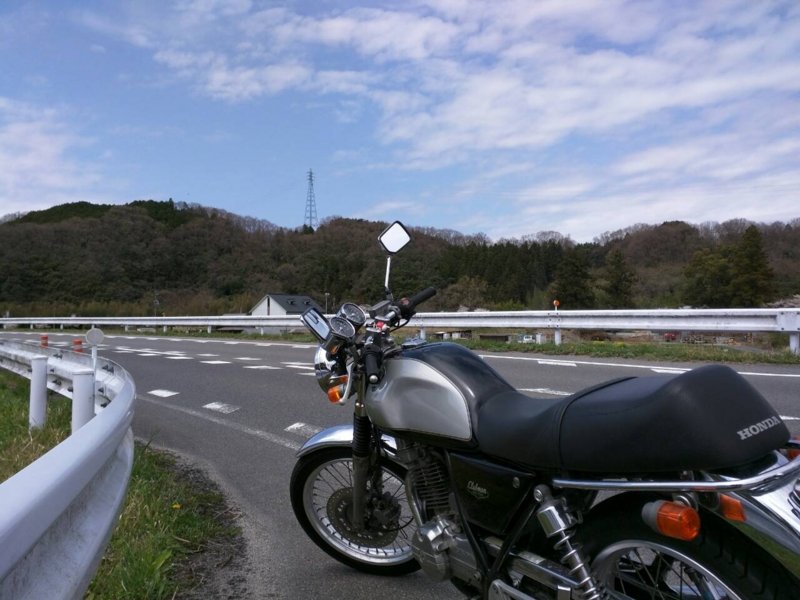
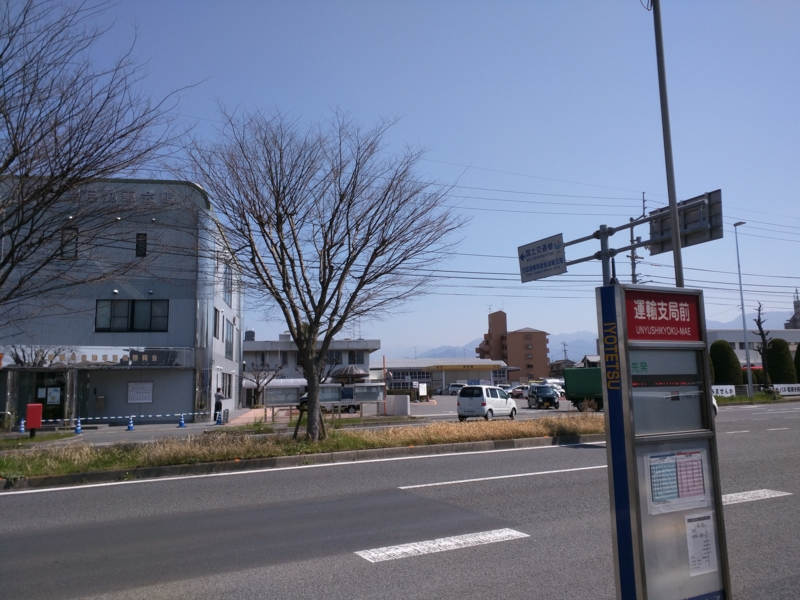
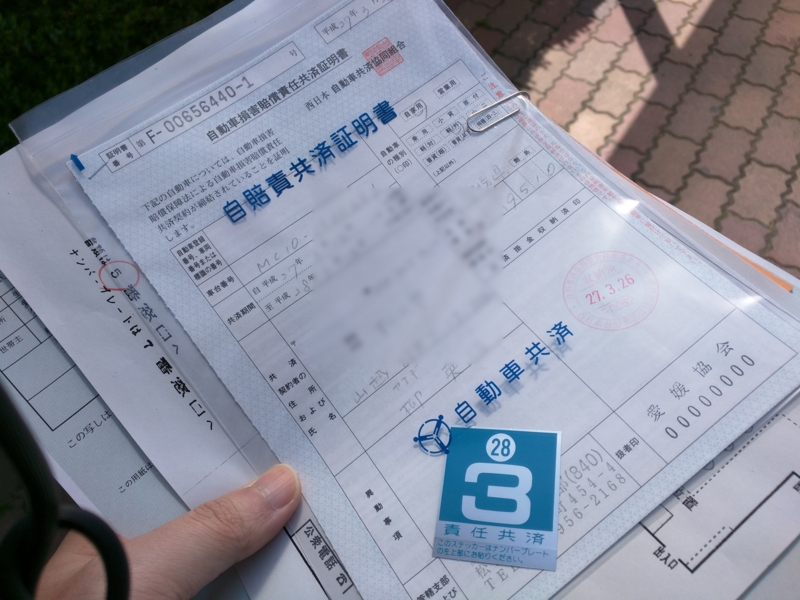
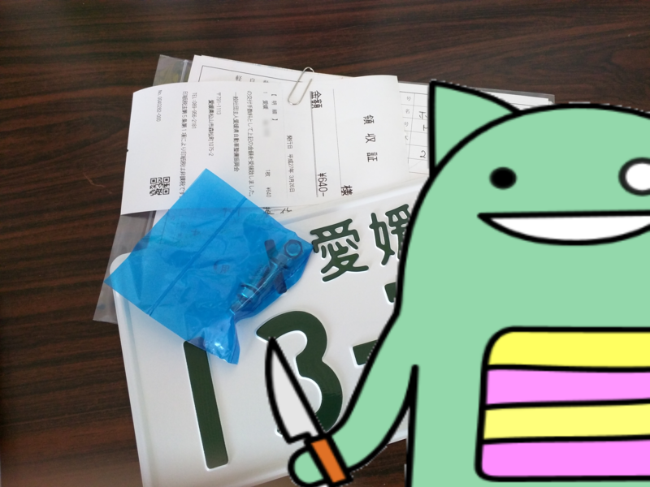

歩兵部隊を卒業した（バイクを買ったの意）ので、ナンバー登録してきた
公開日：

引っ越す時に Ducati 売り払って歩兵生活をしていたのだけど、1年経ったし、そろそろバイクほしくなった。というわけで、近所のバイク屋さんを横目で観察したり、レッドバロンにふらりと迷い込んだりしてみたのだけど、どうもしっくりこぬ。今は無職なのでローンも通らないだろうし、新車で買うなら 250cc クラスが限界というありさま。そのクラスなら新しい YZF-R25 や Ninja 250 SL に興味があるのだけど、初物に手を出すのもアレだし（案の定、この前 YZF-R25 のリコールを見かけた）。
そんなこんなで、ああでもないこうでもないと悩んでいたなか、ヤフオクで出会ったのがこの子。ホンダ・GB250クラブマン。レトロなスタイリングに250ccの空冷DOHC4バルブ単気筒を組み合わせた小柄なバイク。
20,000km 走った最終型で 158,000円なり。外装の程度は割かしよく、磨けばきれいになりそう。ときどき1速・ニュートラル・2速に入りづらくなるものの*1、ギヤ抜けなどはなく、機関も好調のようだ。とりあえず1年乗るにはよい買い物だったかなと思う。買う前に一通り Web で評判を調べたのだけど、ちょっとエンジンが弱い子らしいので、オイル交換をマメにして、バイク屋さんによく見てもらおうと思う。
――それはともかく。
今回は陸運局まで出かけてナンバープレートをもらうのも自分でやってみた。他の人に頼むよりちょっぴり安くなるかもしれない。

ウチの場合、最寄りは四国運輸局愛媛運輸支局（松山市森松町）になる。バスでも行けるっぽいけど、自分はどのバスに乗っていいのかわからなかったので、松山駅からタクシーを使った。運賃は2,000円ちょっと。帰りは簡単（松山市駅行きのバスがある）なので、バスと電車で帰った。
用意するのは、
- 軽自動車届出済証返納確認書など（相手から送られてくる）
- 自分の住民票（発行後3カ月以内）
- 印鑑（認印でよい）
の3点。陸運局で0番窓口（総合案内。なにもわからん時はここで聞けばよい）に行くと3番へ行けといわれるので（直接3番に行ってもよい）、3番窓口に行くと、別棟の5番窓口で用紙を買え＆自賠責保険を申し込んで来いと言われる。地図を渡されるので、それを見ながらスタンプラリーの開始。
まず、5番窓口で謎の紙を購入。確か40円ぐらい。
次に、その右隣にある司法書士さんのところで、自賠責保険に入る。1年で1万円弱。この司法書士さん、どういう手練手管で陸運局内に事務所構えたんだろう？

この二つをゲットしたら、ふたたび3番窓口のお姉さんのところに行く。すると、購入した用紙に必要項目を書けといわれる。ちゃんと説明してくれるけど、1回ではよくわからん。でも、机にサンプル（だいぶ色落ちしているが……）が貼ってあるので、それを見ながら落ち着いて書けばたぶんイケるハズ。万が一間違ったって殺されはしないし、最悪40円払いなおすだけだろうので問題ない。
書き終わったら3番に提出してしばし待つ。たぶん10分か15分ぐらい……。

あとはさっきの別棟にある8番窓口でナンバープレートを買えばおっけー。確か600円ぐらいとられたように思うけれど、新品のナンバープレートはちょっとうれしく、またネジがオマケされているので、行政に搾取された感じはまったくしない。
手続きはこれで完了。
お腹が空いたので、陸運局の向かい側にあるリンガーハットでちゃんぽん食べた。野菜一杯で美味しいので、ぜひ山越方面にも出店してほしいと思う。
P.S.
ブログ書いてて思い出したけど、ナンバープレートに自賠責のシールはるのを忘れたまま250kmも走ってた。すまんやで。今度乗るとき貼っとくやわ。
*1:スコッと入る時もある。まぁ、ニュートラル入りにくいのはバイクあるあるなので